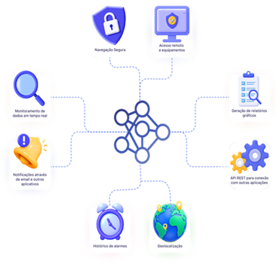

Treinamento e formação HI Tecnologia
Ambiente focado no monitoramento, integração e gestão de dados utilizando o Portal de Telemetria. Esta etapa abrange desde a criação da conta e cadastro de equipamentos até o desenvolvimento de telas, relatórios personalizados, alertas via Telegram, configuração de buffers de dados e integração via API Rest. Não se esqueça de salvar os arquivos das aulas em pastas individuais para cada tema, na sua pasta localizada em: L:\GAdmn\DSuporte Tecnico\Minha Pasta.

Leia a documentação oficial, escreva um resumo sobre o que é o Portal de Telemetria, cite seus recursos e onde pode ser utilizado. Em seguida, apresente seus resultados para os colaboradores do departamento.
Acessar conteúdoCrie uma conta no Portal de Telemetria e contrate o plano Enterprise seguindo o tutorial.
Cadastre um equipamento que foi programado no HIstudio no Portal.
Cadastre dados do equipamento seguindo os tutoriais (Habilite Histórico para os dados).
Cadastre alarmes para os dados no Portal de Telemetria. Ao finalizar todas essas etapas de cadastro, apresente seus resultados para os colaboradores do departamento.
Assista ao Treinamento do Portal de Telemetria sobre desenvolvimento de telas, utilizando o programa para simulação de dados de energia e reproduza os conteúdos dos vídeos.
Acessar o programaFaça um relatório personalizado para os dados cadastrados anteriormente e apresente seus resultados para os colaboradores.
Crie um Bot no Telegram para receber notificações configuradas no portal.
Acessar conteúdoRealize um acesso remoto no CLP conectado no Portal utilizando o Plug de Telemetria. Após concluir, apresente seus resultados para os colaboradores do departamento.
Acessar conteúdoEntenda a possibilidade de coleta de dados salvos em uma estrutura do CLP (buffer), que pode ser expandida para SDCard. Leia e assista sobre o antigo bloco [HIWG] para entender os conceitos fundamentais (cache, id, timestamp, endereço da base local), sem necessidade de implementar no programa.
Acessar conteúdoAssista aos vídeos tutoriais sobre o novo buffer de dados para o Portal e reproduza o conteúdo.
Acessar conteúdoEntenda os conceitos de integração utilizando a API Rest do Portal de Telemetria e reproduza os conteúdos dos vídeos tutoriais.